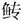

春秋公羊传卷二十一
襄公下
襄公二十五年
春，齐崔杼帅师伐我北鄙。
夏五月乙亥，齐崔杼弑其君光。
公会晋侯、宋公、卫侯、郑伯、曹伯、莒子、邾娄子、滕子、薛伯、杞伯、小邾娄子于陈仪。
六月壬子，郑公孙舍之帅师入陈。
秋八月己巳，诸侯同盟于重丘。公至自会。
卫侯入于陈仪。陈仪者何？卫之邑也。曷为不言入于卫？谖君以弑也。
楚屈建帅师灭舒鸠。
冬，郑公孙囆帅师伐陈。
十有二月，吴子谒伐楚，门于巢卒。门于巢卒者何？入门乎巢而卒也。入门乎巢而卒者何？入巢之门而卒也。吴子谒何以名？伤而反，未至乎舍而卒也。
襄公二十六年
春，王二月辛卯，卫宁喜弑其君剽。
卫孙林父入于戚以叛。
甲午，卫侯衎复归于卫。此谖君以弑也。其言复归何？恶剽也。曷为恶剽？剽之立，于是未有说也。然则曷为不言剽之立？不言剽之立者，以恶卫侯也。
夏，晋侯使荀吴来聘。
公会晋人、郑良霄、宋人、曹人于澶渊。
秋，宋公杀其世子痤。
晋人执卫宁喜。此执有罪，何以不得为伯讨？不以其罪执之也。
八月壬午，许男宁卒于楚。
冬，楚子、蔡侯、陈侯伐郑。
葬许灵公。
襄公二十七年
春，齐侯使庆封来聘。
夏，叔孙豹会晋赵武、楚屈建、蔡公孙归生、卫石恶、陈孔瑗、郑良霄、许人、曹人于宋。
卫杀其大夫宁喜，卫侯之弟出奔晋。卫杀大夫宁喜，则卫侯之弟曷为出奔晋？为杀宁喜出奔也。曷为为杀宁喜出奔？卫宁殖与孙林父逐卫侯而立公孙剽，宁殖病将死，谓喜曰：“黜公者，非吾意也，孙氏为之。我即死，女能固纳公乎？”喜曰：“诺。”宁殖死，喜立为大夫。使人谓献公曰：“黜公者，非宁氏也，孙氏为之。吾欲纳公何如？”献公曰：“子苟纳我，吾请与子盟。”喜曰：“无所用盟，请使公子约之。”献公谓公子曰：“宁氏将纳我，吾欲与之盟。其言曰：‘无所用盟，请使公子约之’。子固为我与之约矣。”公子辞曰：“夫负羁絷，执铁锧，从君东西南北，则是臣仆庶孽之事也。若夫约言为信，则非臣仆庶孽之所敢与也。”献公怒曰：“黜我者，非宁氏与，孙氏凡在尔。”公子不得已而与之约。已约，归至杀宁喜。公子挈其妻子而去之，将济于河，携其妻子而与之盟，曰：“苟有履卫地食卫粟者，昧雉彼视。”
秋七月辛巳，豹及诸侯之大夫盟于宋。曷为再言豹？殆诸侯也。曷为殆诸侯？为卫石恶在是也，曰恶人之徒在是矣。
冬十有二月乙亥朔，日有食之。
襄公二十八年
春，无冰。
夏，卫石恶出奔晋。
邾娄子来朝。
秋八月，大雩。仲孙羯如晋。
冬，齐庆封来奔。
十有一月，公如楚。
十有二月甲寅，天王崩。
乙未，楚子昭卒。
襄公二十九年
春，王正月，公在楚。何言乎公在楚？正月以存君也。
夏五月，公至自楚。
庚午，卫侯衎卒。
阍弑吴子余祭。阍者何？门人也，刑人也。刑人则曷为谓之阍？刑人非其人也。君子不近刑人，近刑人则轻死之道也。
仲孙羯会晋荀盈、齐高止、宋华定、卫世叔齐、郑公孙段、曹人、莒人、邾娄人、滕人、薛人、小邾娄人城杞。
晋侯使士鞅来聘。
杞子来盟。
吴子使札来聘。吴无君无大夫，此何以有君有大夫？贤季子也。何贤乎季子？让国也。其让国奈何？谒也、余祭也、夷昧也，与季子同母者四，季子弱而才，兄弟皆爱之，同欲立之以为君，谒曰：“今若是迮而与季子国，季子犹不受也，请无与子而与弟，弟兄迭为君，而致国乎季子。”皆曰：“诺。”故诸为君者，皆轻死为勇，饮食必祝，曰：“天苟有吴国，尚速有悔于予身。”故谒也死，余祭也立。余祭也死，夷昧也立。夷昧也死，则国宜之季子者也。季子使而亡焉。僚者，长庶也即之，季子使而反至，而君之尔。阖庐曰：“先君之所以不与子国而与弟者，凡为季子故也。将从先君之命与，则国宜之季子者也；如不从先君之命与，则我宜立者也，僚恶得为君乎？”于是使专诸刺僚，而致国乎季子。季子不受曰：“尔弑吾君，吾受尔国，是吾与尔为篡也。尔杀吾兄，吾又杀尔，是父子兄弟相杀终身无已也。”去之延陵，终身不入吴国。故君子以其不受为义，以其不杀为仁。贤季子则吴何以有君有大夫？以季子为臣，则宜有君者也。札者何？吴季子之名也。《春秋》贤者不名，此何以名？许夷狄者不壹而足也。季子者所贤也，曷为不足乎季子？许人臣者必使臣，许人子者必使子也。
秋九月，葬卫献公。
齐高止出奔北燕。
冬，仲孙羯如晋。
襄公三十年
春，王正月，楚子使薳颇来聘。
夏四月，蔡世子般弑其君固。
五月甲午，宋灾，伯姬卒。
天王杀其弟年夫。
王子瑕奔晋。
秋七月，叔弓如宋，葬宋共姬。外夫人不书葬，此何以书？隐之也。何隐尔？宋灾，伯姬卒焉。其称谥何？贤也。何贤尔？宋灾，伯姬存焉，有司复曰：“火至矣，请出。”伯姬曰：“不可。吾闻之也，妇人夜出，不见傅母不下堂。傅至矣，母未至也。”逮乎火而死。
郑良霄出奔许，自许入于郑，郑人杀良霄。
冬十月，葬蔡景公。贼未讨何以书葬？君子辞也。
晋人、齐人、宋人、卫人、郑人、曹人、莒人、邾娄人、滕人、薛人、杞人、小邾娄人会于澶渊，宋灾故。宋灾故者何？诸侯会于澶渊，凡为宋灾故也。会未有言其所为者，此言所为何？录伯姬也。诸侯相聚，而更宋之所丧，曰死者不可复生，尔财复矣。此大事也。曷为使微者？卿也。卿则其称人何？贬。曷为贬？卿不得忧诸侯也。
襄公三十一年
春，王正月。
夏六月辛巳，公薨于楚宫。
秋九月癸巳，子野卒。
己亥，仲孙羯卒。
冬十月，滕子来会葬。
癸酉，葬我君襄公。
十有一月，莒人杀其君密州。